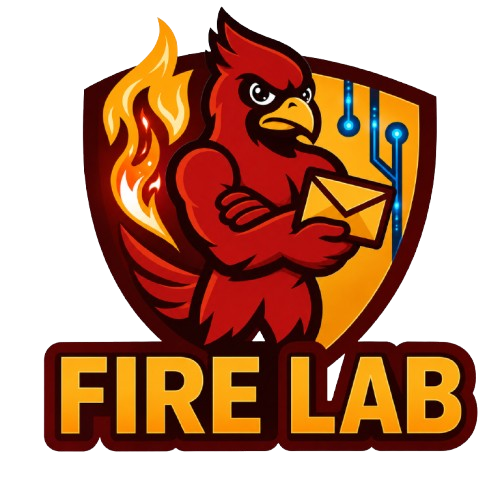

01
Prospective Students
Students interested in AI security, cyber-physical systems, digital forensics, malware analysis, or secure intelligent systems are encouraged to reach out with their CV and research interests.
We welcome conversations with prospective students, collaborators, industry partners, and researchers interested in AI security, cyber-physical systems security, digital forensics, and resilient intelligent infrastructure.

Students interested in AI security, cyber-physical systems, digital forensics, malware analysis, or secure intelligent systems are encouraged to reach out with their CV and research interests.
We welcome opportunities to collaborate with academic and industry researchers on real-world security challenges across AI, systems, IoT, and critical infrastructure.
Send us a short note about your background, interests, and the type of collaboration or opportunity you are looking for.